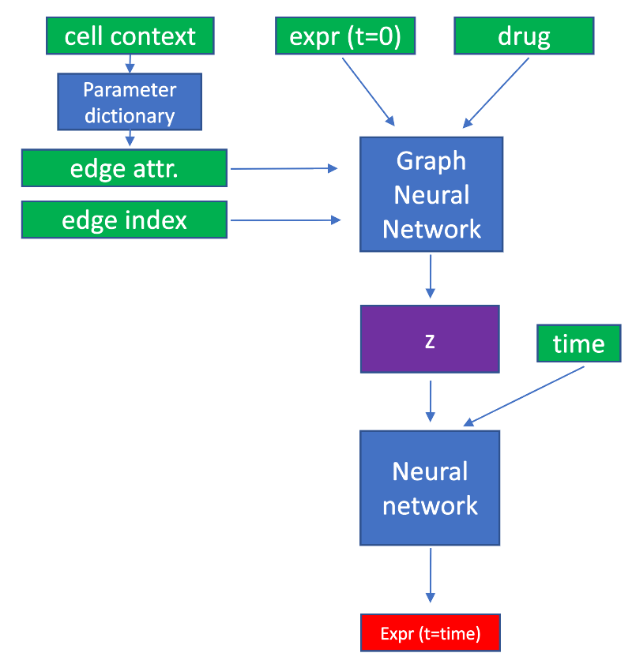
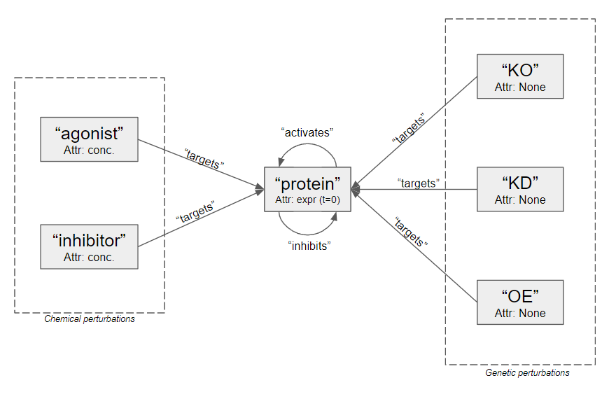

Graph Neural Network Cancer Drug Response (gnnCDR)
This is our primary model, which incorporates protein-protein interactions as prior knowledge. We do this in a graph neural network (GNN) framework. The graph object is specified by edge_index (characterizes edges in the network) and edge_attr (characterizes edge features). Node features are specified by expr (t=0) for protein nodes and by drug for perturbation nodes.

Similar to the naiveNN architecture, we predict a time-agnostic latent representation for each gene/node (specified as z in figure 1). This mechanism allows us to use a single, relatively simple, fully-connected neural network to be shared across all genes; This function takes the time-agnostic latent representation of a gene and time, and predicts a discrete time-point's expression value. In this way, we can train our model to predict time-series through individual time points.
Graph structure

Trainable Edge Attributes
Edges are separated by edge type and can fall into one of the following categories:
- (agonist, targets, protein)
- (inhibitor, targets, protein)
- (KO, targets, protein)
- (KD, targets, protein)
- (OE, targets, protein)
- (protein, activates, protein)
- (protein, inhibits, protein)
There are unique graph convolution parameter sets that operate on each edge type; however, we also desire to include trainable edge features in some of these edge types.
Learning Binding Affinity
To capture drug-target binding affinity, commonly characterized by the pharmacological binding affinity value, we add a trainable edge parameter for all edges of type:
- (agonist, targets, protein)
- (inhibitor, targets, protein)
Learning context-specific PPIs
Our approach relies on the premise that gene expression is largely mediated by PPIs. A pragmatic challenge of this premise is that most PPI databases are aggregations across multiple cell types and cancers – thus representing possible PPIs but unlikely to characterize any individual cellular context (e.g., only a subset of all possible PPIs are active in any given cell context). This means that our GNN must operate on an imperfect PPI graph that has few missing edges but many contextually false edges. We hypothesize that GNN flexibility will be able to account for the error in PPI data by taking advantage of other feature types ond mechanisms. We address this challenge in two ways.
First, we include intrinsic cancer features (expression, mutation, copy number variation, methylation, or gene dependency) to mediate proper message passing between nodes. We hypothesize that our GNN model can use the local neighborhood of intrinsic features to mediate information flow along each edge. We rationalize that this assumption is valid in many cases. For instance, certain expression, methylation patterns, mutations or CNV patterns may indicate that a protein is not functional. Our model should use these node features to limit information flow along the respective incoming and outgoing edges. We note that our synthetic data does not model intrinsic features like mutation, CNV or methylation – and therefore, our preliminary synthetic evaluation of this approach is limited.
Second, we use global features of cellular context to predict latent edge features. We use an attention mechanism to predict a protein-protein edge feature based on the cellular context, which allows our method to model complex cell specific edge behavior (e.g., for cell type A, we learn an importance feature for every PPI edge). We rationalize that intrinsic cancer features will not be able to account for more complex biological scenarios such as protein localization or quaternary structure, which are likely to cause distinct subsets of contextually active PPIs (rather than all in/out edges of a node being active/inactive).
In our synthetic data, we one-hot encode cell-line (e.g., the unqiue synthetic data GRN model used to create each, so called "cell line's" unique behavior). This cell-line input is used to predict a set of edge features for every edge of type:
- (protein, activates, protein)
- (protein, inhibits, protein)
As such, each cell-line can learn a unique set of PPI edge features. We believe that this mechanism will play an important role in capturing cell-type specific regulatory behavior.
Example
dummy_data = train_dataset.__getitem__(0) # HeteroData object from SynthHeteroDataset
gene_names = train_dataset.gene_names # gene names, specifies node index
pert_names = train_dataset.pert_names # perturbation names
pert_map = train_dataset.pert_map # perturbation map, specifies each perturbation type name's and node index (6 pert. types)
hidden_channels = 25 # the number of hidden channels to use in each GNN layer / convolution
num_layers = 10 # the number of GNN layers to include
nheads = 5 # the number of attention heads to use in PPI convolutions
beta = 0.8 # parameter specifying residual connection strength
dropout = 0.3 # regularization parameter
pairnorm = True # whether to use `pairnorm` or not - improves performance when `num_layers` > 3
########################################################################
########################################################################
model = gnn_cdr.model.GNNCDR( gene_names = gene_names,
pert_names = pert_names,
pert_map = pert_map,
data = dummy_data,
hidden_channels = hidden_channels,
num_layers = num_layers,
nheads = nheads,
beta = beta,
dropout = dropout,
pairnorm = pairnorm )